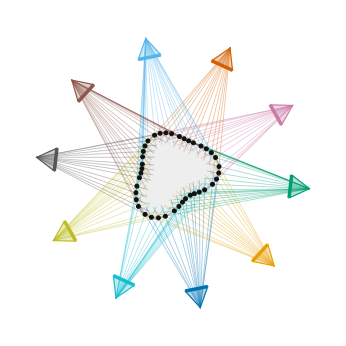
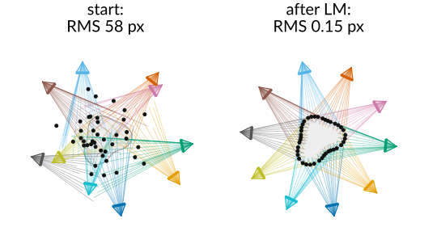
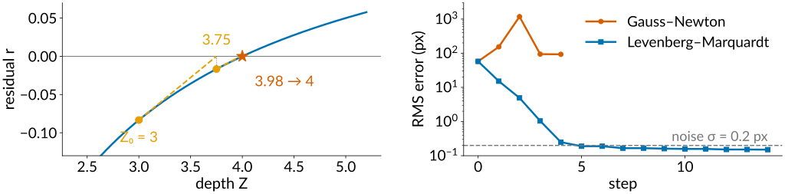
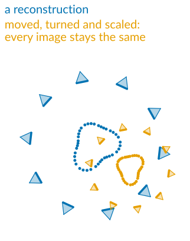
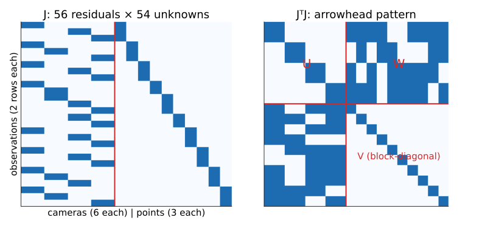
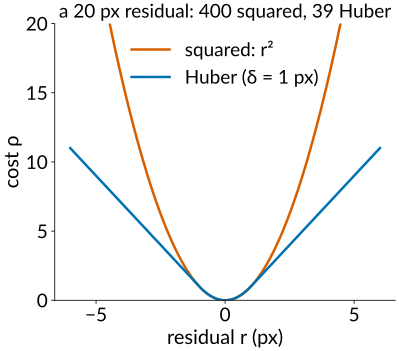
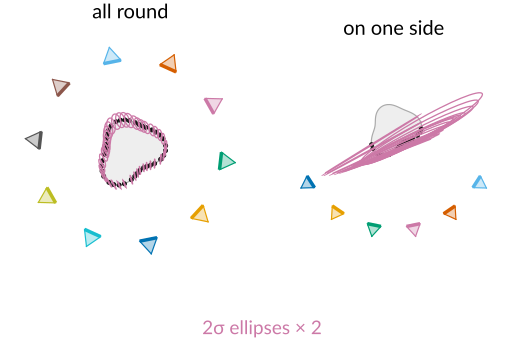
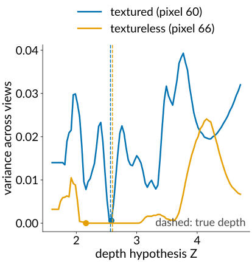

Many views: structure from motion and bundle adjustment
Image analysis
About this lecture
A pile of photographs, no calibration object, no known camera positions. Find the cameras and the 3D points at the same time.
Structure from motion: start from two views, add cameras one at a time, triangulate, repeat.
Bundle adjustment: one least-squares problem over all cameras and all points.
Gauss–Newton and Levenberg–Marquardt: how the solver walks downhill.
Gauge freedom (the reconstruction can be moved, turned and scaled) and sparsity (why it scales to thousands of images).
Outliers, drift, and how certain the points are.
Multi-view stereo: once the cameras are known, match every pixel by sweeping planes.
Slides titled The math give the formulas and proofs; the ideas are complete without them.
The problem
Photographs of an object from many unknown positions: find where each camera was and the 3D shape.
Photogrammetry: objects, buildings, landscapes, archaeological finds; plant phenotyping: leaf areas and stem angles from a ring of photos.
Tilt-series alignment in electron tomography: gold beads (fiducials) tracked through a series of tilted images; finding the tilt geometry and the bead positions together is the same problem with an affine camera.
The camera poses behind every modern 3D capture, including the radiance fields and Gaussian splats of the optional last unit.
What we have from the previous units: matched interest points (unit 2), a way to get two cameras from E (unit 2), triangulation (unit 2), and a camera from known 3D points by the DLT (unit 1).

The incremental pipeline
Match interest points between all pairs of images (descriptors, ratio test, RANSAC on F).
Pick an initial pair: many matches and a real baseline (not a pure rotation).
Its essential matrix gives two cameras; triangulate the common points.
Add a camera: one that sees many already reconstructed points. Its pose from those points is a calibration with the reconstruction as the “known object”: resection (the DLT of the camera unit; for a calibrated camera, 3 points suffice, plus a fourth to pick among the few solutions).
Triangulate the new points it shares with the others.
Bundle adjust everything so far; go back to 4.
Small errors in each step add up, so step 6 is not optional. Global methods (all rotations first, then all positions) exist too.
Bundle adjustment
One least-squares problem: change all camera parameters and all points to minimise the total reprojection error (the pixel distance between each observed point and where the current cameras and points predict it).
“Bundle”: the bundle of rays from each point to the cameras that see it, adjusted until they hit the observations.
It is the calibration refinement of unit 1, with the target’s points now unknown too.
It is the nonlinear big sibling of the global tile alignment in stitching: there, pairwise shifts gave tile positions in one linear least-squares solve. Here the unknowns enter through rotations and a division by depth: nonlinear.
Typical sizes: 10 cameras, 1000 points seen 4 times each: 3060 unknowns, 8000 residuals.

The math: the bundle adjustment objective
Cameras P_j (parameters: rotation as an axis–angle vector, translation, optionally f, k_1, k_2), points \mathbf X_i, observations \mathbf x_{ij} for the pairs (i, j) \in \mathcal O where camera j sees point i:
\pi = rotate, translate, divide by depth, distort, apply K (unit 1).
\rho(s) = s: ordinary least squares; a robust\rho (Huber) grows more slowly for large residuals.
Counting: 10 cameras × 6 + 1000 points × 3 = 3060 unknowns; 4000 observations × 2 = 8000 residuals. Each residual depends on one camera and one point: 9 of the 3060 unknowns.
Gauss–Newton and Levenberg–Marquardt
Nonlinear least squares, walking downhill:
Gauss–Newton: replace each residual by its tangent (linearise), solve that linear least-squares problem exactly, step to its solution, repeat. Very fast near the answer; can overshoot wildly far from it.
Levenberg–Marquardt adds a damping\mu: large \mu = a small, careful step downhill; small \mu = the full Gauss–Newton step. After a step that lowers the error, \mu shrinks; after one that does not, the step is rejected and \mu grows.
By hand, one unknown: a point at X = 1 seen at normalised x = 0.25, depth Z unknown. Residual r(Z) = 0.25 - 1/Z, slope 1/Z^2. From Z_0 = 3: r = -0.083, slope 0.111, step +0.75: Z_1 = 3.75; then Z_2 = 3.98. The truth is 4.

The math: Gauss–Newton and Levenberg–Marquardt
Residual vector \mathbf r(\boldsymbol\theta), Jacobian J = \partial\mathbf r/\partial\boldsymbol\theta. Linearise: \mathbf r(\boldsymbol\theta + \boldsymbol\delta) \approx \mathbf r + J\boldsymbol\delta, and minimise \lVert\mathbf r + J\boldsymbol\delta\rVert^2:
J^\top J\,\boldsymbol\delta = -J^\top\mathbf r \quad(\text{Gauss–Newton}), \qquad (J^\top J + \mu D)\,\boldsymbol\delta = -J^\top\mathbf r \quad(\text{Levenberg–Marquardt}),
with D = I or D = \mathrm{diag}(J^\top J) (Marquardt’s scaling).
\mu \to 0: Gauss–Newton. \mu \to \infty: \boldsymbol\delta \approx -\frac{1}{\mu}D^{-1}J^\top\mathbf r, a short step along the (scaled) negative gradient of \tfrac12\lVert\mathbf r\rVert^2.
Accept if \lVert\mathbf r(\boldsymbol\theta + \boldsymbol\delta)\rVert^2 < \lVert\mathbf r(\boldsymbol\theta)\rVert^2 and decrease \mu; else reject and increase \mu.
Robust \rho: reweight each residual by w_i = \rho' (iteratively reweighted least squares): J^\top WJ\,\boldsymbol\delta = -J^\top W\mathbf r.
Try it: bundle adjustment in flatland
Gauge freedom
Move, turn or scale the whole reconstruction (all cameras and all points together): every image stays exactly the same.
3D: 3 (translation) + 3 (rotation) + 1 (scale) = 7 directions in which the error does not change at all. In the 2D flatland demo: 2 + 1 + 1 = 4.
The solution is a family, not a point; the solver may wander along it, and its linear systems are singular.
Fix the gauge: hold the first camera still and fix one distance (or one coordinate of a second camera). Or add a known length, which also sets the true scale.
The same thing happened in stitching: tile positions from pairwise shifts are determined only up to a common shift, so one tile is held fixed.

Sparsity: why it scales

Each observation involves one camera and one point, so the Jacobian is almost empty, and J^\top J has an arrowhead shape: cameras top left (U), points bottom right (V, block-diagonal: one small block per point), couplings in between (W).
Eliminate the points first: each point block is 3 \times 3 and inverted on its own. What remains is a small system over the cameras only (the Schur complement): 60 \times 60 for 10 cameras instead of 3060 \times 3060.
Then each point is updated on its own. Thousands of cameras and millions of points become feasible.
The math: the Schur complement
Order the unknowns as cameras \boldsymbol\delta_c, points \boldsymbol\delta_p: \begin{bmatrix} U & W \\ W^\top & V \end{bmatrix}\begin{pmatrix}\boldsymbol\delta_c \\ \boldsymbol\delta_p\end{pmatrix} = \begin{pmatrix}\mathbf g_c \\ \mathbf g_p\end{pmatrix}, \qquad V = \mathrm{blockdiag}(V_1, \dots, V_n),\ V_i \in \mathbb R^{3 \times 3}.
The second row gives \boldsymbol\delta_p = V^{-1}(\mathbf g_p - W^\top\boldsymbol\delta_c); substituting into the first: (U - WV^{-1}W^\top)\,\boldsymbol\delta_c = \mathbf g_c - WV^{-1}\mathbf g_p .
Cost: V^{-1} is n tiny inversions (O(n)); the reduced system is 6m \times 6m for m cameras (O(m^3)), instead of O((6m + 3n)^3). For m = 10, n = 1000: 60^3 against 3060^3, a factor of about 10^5.
Robustness, drift and loop closure
A few wrong matches with residuals of 20 pixels dominate a sum of squares: the solver bends everything to reduce them. A robust loss (Huber: squared for small residuals, linear for large ones) lets them stay large. Combine with RANSAC upstream.
Drift: in a long chain of cameras (walking down a corridor, a time-lapse, tiles of a mosaic) each new pose inherits the errors of the previous one, as in the chain of tiles in stitching.
Loop closure: when the camera sees an old part of the scene again, the matches tie the end of the chain to its start, and bundle adjustment spreads the accumulated error around the loop.

How certain are the points?
After bundle adjustment the solver knows how steep the error is in every direction: shallow directions are uncertain.
With the gauge fixed, the covariance of the estimate is about \sigma^2(J^\top J)^{-1} (\sigma = pixel noise). Each point gets an uncertainty ellipse (ellipsoid in 3D).
Points seen from many directions: small, round ellipses. Points seen only from one side, or far from all cameras: long ellipses (the wedges of unit 2).
The ellipses also carry the uncertainty of the cameras: if the cameras’ own positions are poorly fixed, all points share a long common direction.

The math: gauge and covariance
A similarity \mathbf X \to s\,Q\mathbf X + \mathbf a applied to all points, with each camera moved along (R_j \to R_jQ^\top, \mathbf t_j \to s\,\mathbf t_j - R_jQ^\top\mathbf a), leaves every \pi(P_j, \mathbf X_i) unchanged: the residuals are invariant on a 7-parameter family (3D). Differentiating along it: J\mathbf v = 0 for 7 independent \mathbf v, so J^\top J has (at least) 7 zero eigenvalues.
Fixing the gauge removes those directions (hold some parameters); then J^\top J is invertible near the solution.
First-order covariance for Gaussian pixel noise \sigma: \Sigma_{\boldsymbol\theta} \approx \sigma^2(J^\top J)^{-1} (gauge fixed), or \sigma^2(J^\top J)^{+} (pseudo-inverse) for the minimum-norm gauge. Point i’s ellipse is its 3 \times 3 (2D: 2 \times 2) block.
Try it: gauge, outliers, uncertainty
Dense reconstruction: multi-view stereo
Structure from motion gives the cameras and a sparse set of points. With the cameras known, every pixel can be matched:
Plane sweep (Collins, 1996): for one reference image, try a series of depths. For each depth, imagine a plane at that depth, warp the other images onto the reference through that plane (a homography), and compare. Where the colours agree across all views (photo-consistency), the surface is at that depth.
Per pixel, keep the most consistent depth: a depth map per image (stereo, generalised to many views and any camera arrangement).
Fuse the depth maps into a point cloud or a volume, and extract a mesh with marching cubes.
It fails where stereo fails: textureless and shiny surfaces, occlusions (a point hidden in some views); more views help, wide angles hurt.

The math: the plane-induced homography
For a plane \mathbf n^\top\mathbf X = d (in camera 1’s coordinates) and camera 2 with \mathbf X_2 = R\mathbf X + \mathbf t:
Proof: on the plane, \mathbf n^\top\mathbf X/d = 1, so \mathbf t = \mathbf t\,\mathbf n^\top\mathbf X/d and R\mathbf X + \mathbf t = (R + \mathbf t\mathbf n^\top/d)\mathbf X; with \mathbf X \propto K^{-1}\mathbf x_1 the rest follows.
Fronto-parallel sweep: \mathbf n = (0, 0, 1), d = Z; each depth hypothesis is one homography per view.
Photo-consistency of pixel \mathbf p at depth Z: e.g. the variance of the sampled values across views, or the sum of NCC scores against the reference window.
Try it: plane sweep in flatland
Summary
Structure from motion: match → initial pair (E, triangulate) → add cameras by resection → triangulate → bundle adjust → repeat.
Bundle adjustment minimises the total reprojection error over all cameras and points: nonlinear least squares by Gauss–Newton / Levenberg–Marquardt (damping \mu).
Gauge freedom: 7 directions (move, turn, scale) change no image; fix them. The scale needs a known length.
Sparsity: one camera and one point per residual; eliminate the points (Schur complement) and solve a small camera system.
Robust losses against wrong matches; loop closure against drift; \sigma^2(J^\top J)^{-1} for uncertainty ellipses.
Multi-view stereo: with known cameras, sweep depth planes and keep the most photo-consistent depth per pixel.